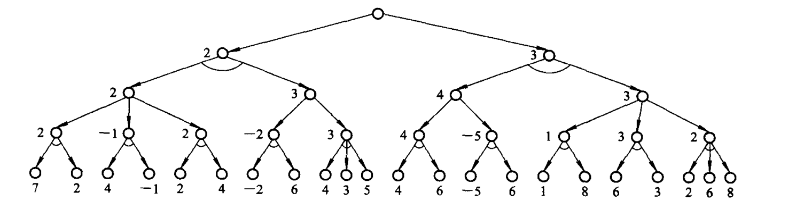
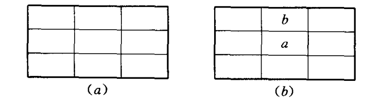
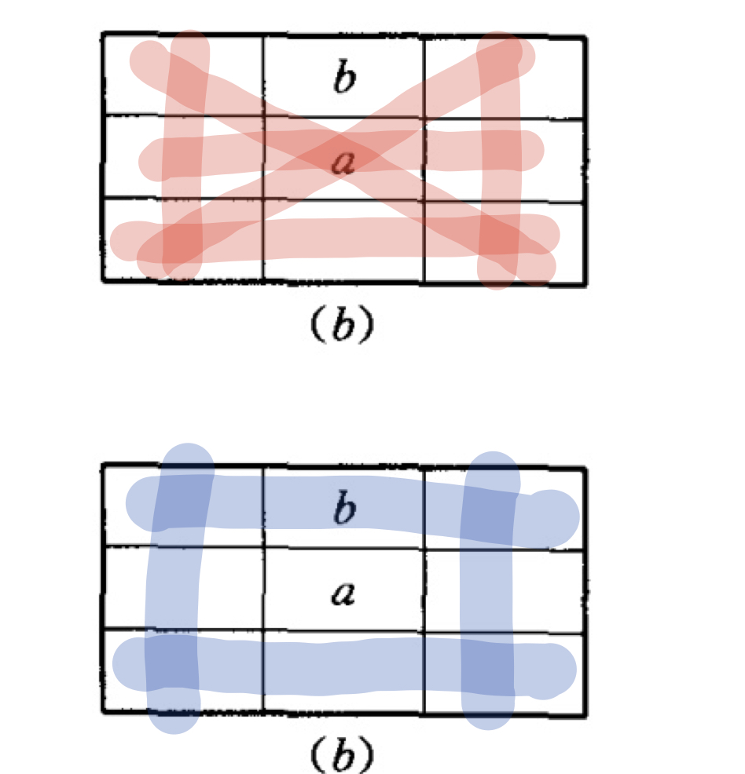
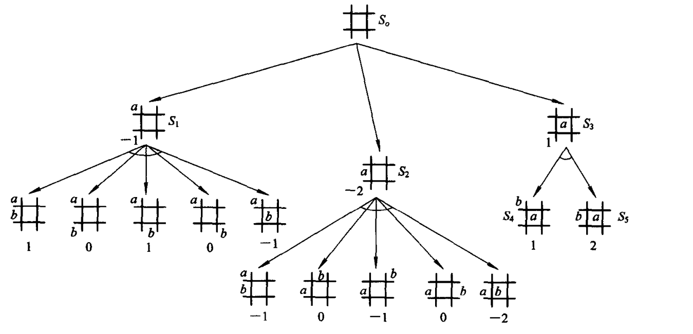
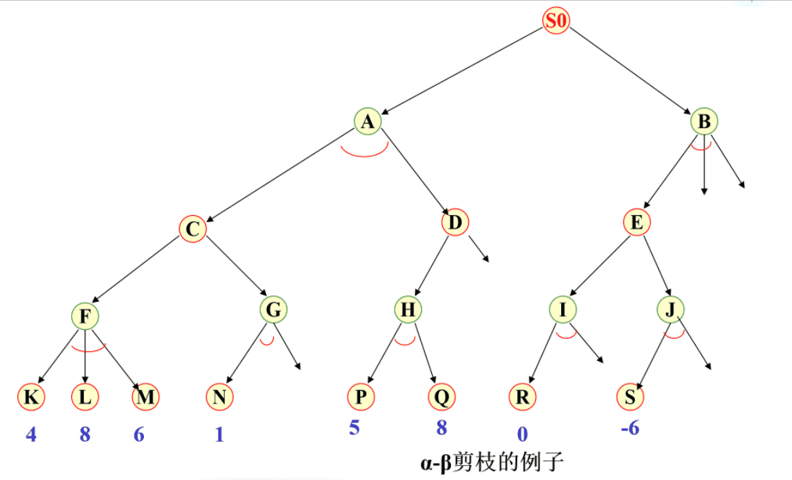
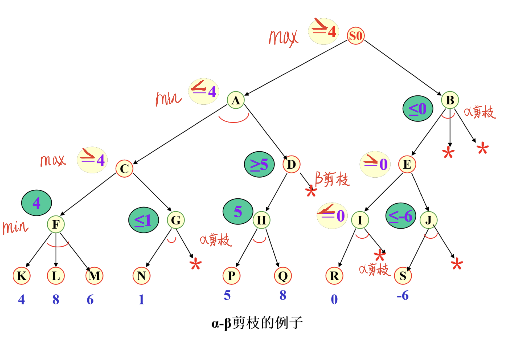

原文连接:https://www.cnblogs.com/wkfvawl/p/12066647.html
我在之前整理过一篇博客关于博弈论和纳什均衡的几个例子https://www.cnblogs.com/wkfvawl/p/11725263.html
这里来介绍博弈树搜索。
一、博弈树的概念
在博弈过程中, 任何一方都希望自己取得胜利。因此,当某一方当前有多个行动方案可供选择时, 他总是挑选对自己最为有利而对对方最为不利的那个行动方案。 此时,如果我们站在A方的立场上,则可供A方选择的若干行动方案之间是“或”关系, 因为主动权操在A方手里,他或者选择这个行动方案, 或者选择另一个行动方案, 完全由A方自己决定。当A方选取任一方案走了一步后,B方也有若干个可供选择的行动方案, 此时这些行动方案对A方来说它们之间则是“与”关系,因为这时主动权操在B方手里,这些可供选择的行动方案中的任何一个都可能被B方选中, A方必须应付每一种情况的发生。
这样,如果站在某一方(如A方,即在A要取胜的意义下), 把上述博弈过程用图表示出来, 则得到的是一棵“与或树”。 描述博弈过程的与或树称为博弈树,它有如下特点：
(1) 博弈的初始格局是初始节点。
(2) 在博弈树中, “或”节点和“与”节点是逐层交替出现的。自己一方扩展的节点之间是“或”关系, 对方扩展的节点之间是“与”关系。双方轮流地扩展节点。
(3) 所有自己一方获胜的终局都是本原问题, 相应的节点是可解节点；所有使对方获胜的终局都是不可解节点。
二、极小极大值分析法
在二人博弈问题中,为了从众多可供选择的行动方案中选出一个对自己最为有利的行动方案, 就需要对当前的情况以及将要发生的情况进行分析,从中选出最优的走步。最常使用的分析方法是极小极大分析法。 其基本思想是：
(1) 设博弈的双方中一方为A,另一方为B。然后为其中的一方(例如A)寻找一个最优行动方案。
(2) 为了找到当前的最优行动方案, 需要对各个可能的方案所产生的后果进行比较。具体地说, 就是要考虑每一方案实施后对方可能采取的所有行动, 并计算可能的得分。
(3) 为计算得分,需要根据问题的特性信息定义一个估价函数, 用来估算当前博弈树端节点的得分。此时估算出来的得分称为静态估值。
(4) 当端节点的估值计算出来后, 再推算出父节点的得分, 推算的方法是：对“或”节点, 选其子节点中一个最大的得分作为父节点的得分,这是为了使自己在可供选择的方案中选一个对自己最有利的方案；对“与”节点, 选其子节点中一个最小的得分作为父节点的得分,这是为了立足于最坏的情况。这样计算出的父节点的得分称为倒推值。
(5) 如果一个行动方案能获得较大的倒推值, 则它就是当前最好的行动方案。

倒推值的计算
在博弈问题中,每一个格局可供选择的行动方案都有很多, 因此会生成十分庞大的博弈树。据统计,西洋跳棋完整的博弈树约有1040个节点。试图利用完整的博弈树来进行极小极大分析是困难的。可行的办法是只生成一定深度的博弈树, 然后进行极小极大分析,找出当前最好的行动方案。在此之后, 再在已选定的分支上扩展一定深度, 再选最好的行动方案。如此进行下去, 直到取得胜败的结果为止。至于每次生成博弈树的深度, 当然是越大越好, 但由于受到计算机存储空间的限制, 只好根据实际情况而定。
例 一字棋游戏。设有如图(a)所示的九个空格, 由A, B二人对弈, 轮到谁走棋谁就往空格上放一只自己的棋子, 谁先使自己的棋子构成“三子成一线”谁就取得了胜利。

一字棋
设A的棋子用“a”表示, B的棋子用“b”表示。为了不致于生成太大的博弈树,假设每次仅扩展两层。估价函数定义如下：
设棋局为P,估价函数为e(P)。
(1) 若P是A必胜的棋局, 则e(P)=+∞。
(2) 若P是B必胜的棋局, 则e(P)=-∞。
(3) 若P是胜负未定的棋局, 则 e(P)=e(+P)-e(-P)
其中e(+P)表示棋局P上有可能使a成为三子成一线的数目；
e(-P)表示棋局P上有可能使b成为三子成一线的数目。
例如, 对于图(b)所示的棋局, 则

按照棋盘上红色连线安放棋子a使得三子成一线，共6条连线。
按照棋盘上蓝色连线安放棋子b使得三子成一线，共4条连线。
e(P)=6-4=2
另外,我们假定具有对称性的两个棋局算作一个棋局。还假定A先走棋, 我们站在A的立场上。
下图给出了A的第一着走棋生成的博弈树。图中节点旁的数字分别表示相应节点的静态估值或倒推值。由图可以看出, 对于A来说最好的一着棋是S3,因为S3比S1和S2有较大的倒推值。

一字棋极小极大搜索
在A走S3这一着棋后,B的最优选择是S4, 因为这一着棋的静态估值较小,对A不利。不管B选择S4或S5,A都要再次运用极小极大分析法产生深度为2的博弈树,以决定下一步应该如何走棋, 其过程与上面类似, 不再重复。
三、α-β剪枝技术

上述的极小极大分析法, 实际是先生成一棵博弈树,然后再计算其倒推值。这样做的缺点是效率较低。于是,人们又在极小极大分析法的基础上,提出了α-β剪枝技术。
这一技术的基本思想是,边生成博弈树边计算评估各节点的倒推值, 并且根据评估出的倒推值范围,及时停止扩展那些已无必要再扩展的子节点, 即相当于剪去了博弈树上的一些分枝, 从而节约了机器开销, 提高了搜索效率。具体的剪枝方法如下:
(1) 对于一个与节点MIN,
若能估计出其倒推值的上确界β,并且这个β值不大于MIN的父节点(一定是或节点)的估计倒推值的下确界α,即α≥β,
则就不必再扩展该MIN节点的其余子节点了(因为这些节点的估值对MIN父节点的倒推值已无任何影响了)。这一过程称为α剪枝。
(2)
对于一个或节点MAX, 若能估计出其倒推值的下确界α, 并且这个α值不小于MAX的父节点(一定是与节点)的估计倒推值的上确界β,
即α≥β,则就不必再扩展该MAX节点的其余子节点了(因为这些节点的估值对MAX父节点的倒推值已无任何影响了)。 这一过程称为β剪枝。
认真品味上面的两句规则，下面给出一个具体的 α-β剪枝的实例。

使用ScreenToGif 截的PPT图，关于ScreenToGif的使用说明参见https://www.cnblogs.com/wkfvawl/p/11625823.html
这里来说一下剪枝过程，F下的第一个节点是K，其值为4，这时作为MIN节点的F上确界β为4，F下的第二个节点L和第三个节点M的值都拿来比较，但都大于4，所以F节点MIN值还是4。这时MAX节点C的下确界α为4，并将α传递给MIN节点G。
G下的第一个节点为1，此时作为MIN节点G的上确界β为1，留意到此时 G的 α=4 ＞ β，所以无需再探索 G的剩余子节点，把未探索的子节点通过α剪枝剪掉。
这里C的父节点A是一个MIN节点，A的估计上确界β便是4。接着我们对A的右子树进行查找，并将β传递下去。
对于MIN节点H，其下的第一个子节点P值为5，大于4，因而接着比较第二个子节点Q值为8，也大于4，因而H节点MIN值的上确界β便是5，P的父节点D是一个MAX节点，因而此时D的下确界α值为5。
由于D的父节点A是一个MIN节点，A的估计倒推值的上确界β为4，小于D的下确界5，因而就不必去扩展MAX节点D的其他子节点了，进行了β剪枝。
这是就可以确定节点A的父亲节点S0，其为MAX节点的下确界α为4，这就对S0右子树进行查找。并直接将下确解α沿着S0->B->E->I传递，深入到I。
对于MIN节点I，其下的第一个子节点R值为0，这时作为MIN节点I的上确界β为0，留意到此时 I 的 α=4 ＞ β，所以无需再探索 I 的剩余子节点，把未探索的子节点通过α剪枝剪掉。
I的父节点是一个MAX节点，更新其父节点E的下确界α为0。将E的α传递给J。
这时对于MIN节点J，其下的第一个子节点S值为-6，这时作为MIN节点I的上确界β为-6，留意到此时 J 的 α=0 ＞ β，所以无需再探索 J的剩余子节点，把未探索的子节点通过α剪枝剪掉。
这时确定了E，E的父亲节点B是一个MIN节点，通过E其上确界β更新为0，但E的父亲节点的α为4，α=4 ＞ β，所以无需再探索 B 的剩余子节点，把未探索的子节点通过α剪枝剪掉。
最终确定S0，搜索完成。

关于α-β剪枝的过程，还想要了解一个，可以参考这篇博客
http://web.cs.ucla.edu/~rosen/161/notes/alphabeta.html
一些碎碎念，今天给同学讲α-β剪枝，把他弄迷糊了，后来我想可能还是太官方了，这种剪枝策略其本质思想是朴素的，就是在确定父亲节点的一个上确界或下确界之后，如果子节点不在该外围内就不去探索了，这就是剪枝。